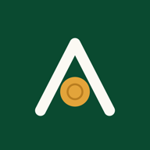

Ouverture de Famille Exemple…
Réessayer
Se connecter avec Face ID
Activer Face ID
L’application s’ouvrira d’un regard, sans code. Votre visage reste sur le téléphone.
Activer
Plus tard
Confirmer la signature
Signer avec Face ID
Annuler
Note vocale
0:00
Enregistrer
Recommencer
Annuler